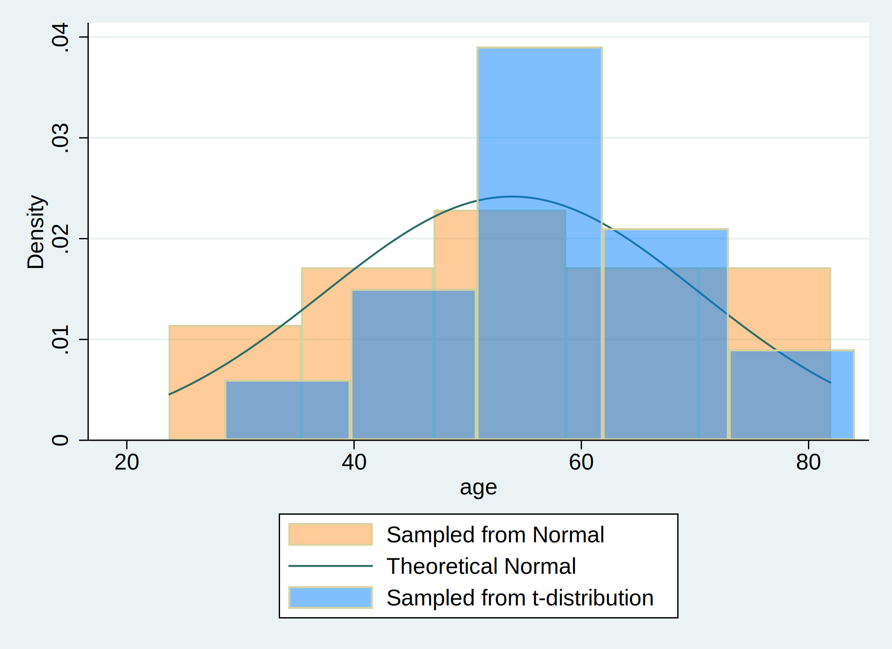

Background: Distribution of a simulated dataset
Methods: The results are based on simulated data
. clear all
.
. * Initialize dataset with 30 observations
. set obs 30
.
. * Create an age variable with a mean of 57 years and a standard deviation of 15
. capture drop age age_t
. gen age = (rnormal() * 15) + 57 //Uses normal distribution
. gen age_t=(rt(_N)*15)+57 //Uses t_distribution
.
. * Plot a histogram of the age variables from both rnormal() and rt(), and overlay it with
> a theoretical normal distribution curve.
. hist age, ///
> fcolor(orange%40) /// simulated normal
> addplot(hist age_t, fcolor(midblue%50)) /// simulated t-distribution
> normal /// theoretical normal
> legend(on ///
> lab(1 "Sampled from Normal") ///
> lab(2 "Theoretical Normal") ///
> lab(3 "Sampled from t-distribution") ///
> )
. graph export hw4_hist.png, replace
 The distribution of the data follows a normal distribution: $$\text{Age, years} \sim \mathcal{N}(\mu=57,,\sigma^{2}=225)$$